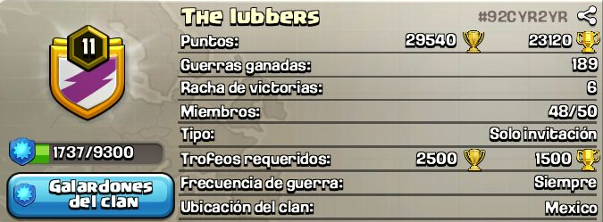
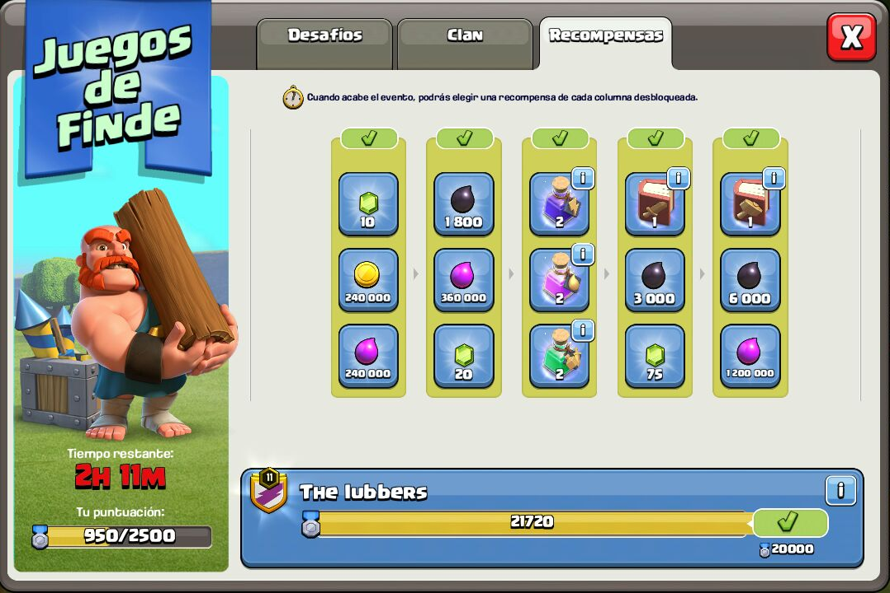
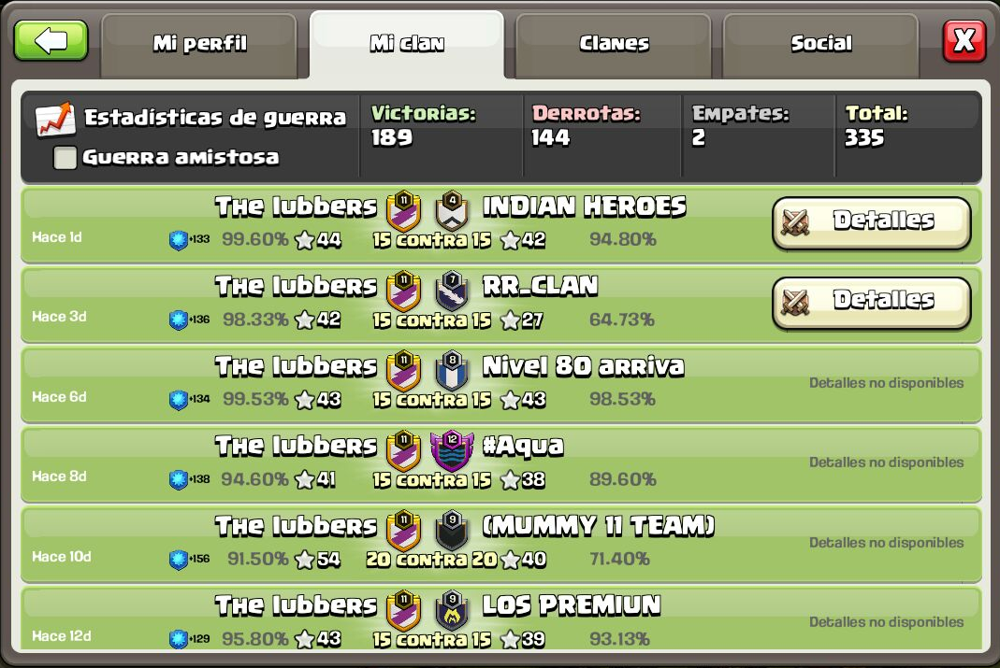

The lubbers |

Welcome to the claneishon del denigrante enfermo de poder (Sasuke). Bienvenido seas, convive y aguanta vara tanto como puedas, y si no puedes, sácate a la ñonga de aquí, perfeccionistas en guerra, no se aceptan errores a menos que seas el saske :v...

Los juegos del clan siempre se completan, se pide que mínimo cada miembro haga 500 puntos, los que no participen serán expulsados del clan.

En cuanto a las guerras, nuevos deben esperar una guerra para poder participar, deben tener donaciones equilibradas y ser activos.
A quién le falte realizar algún ataque de guerra se le sancionará y no podrá entrar en dos guerras seguidas.